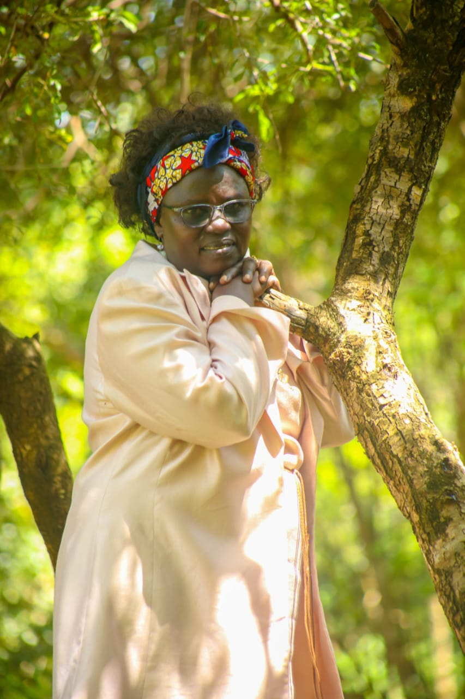
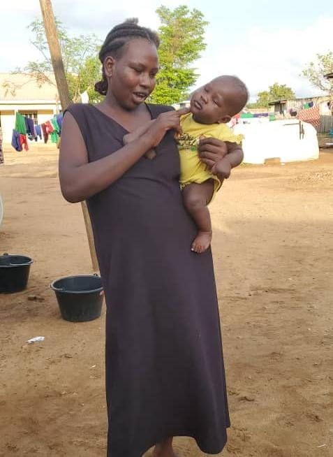
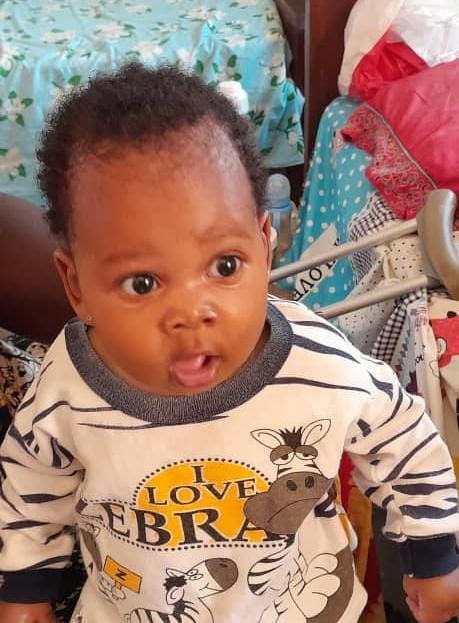
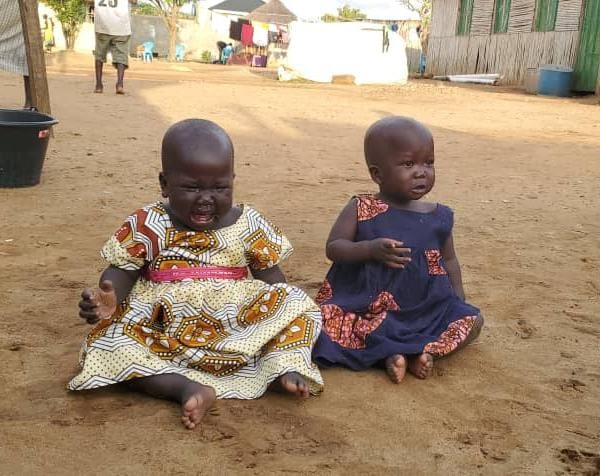
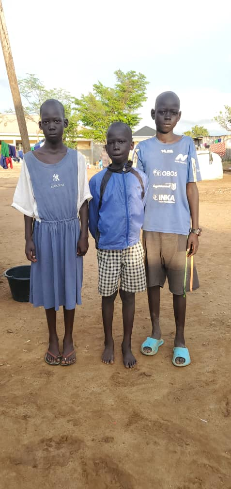
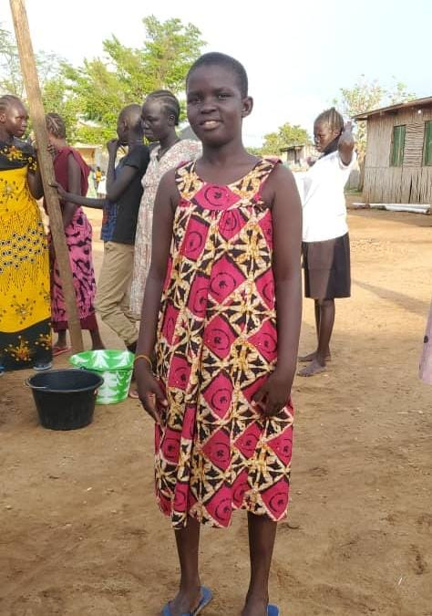
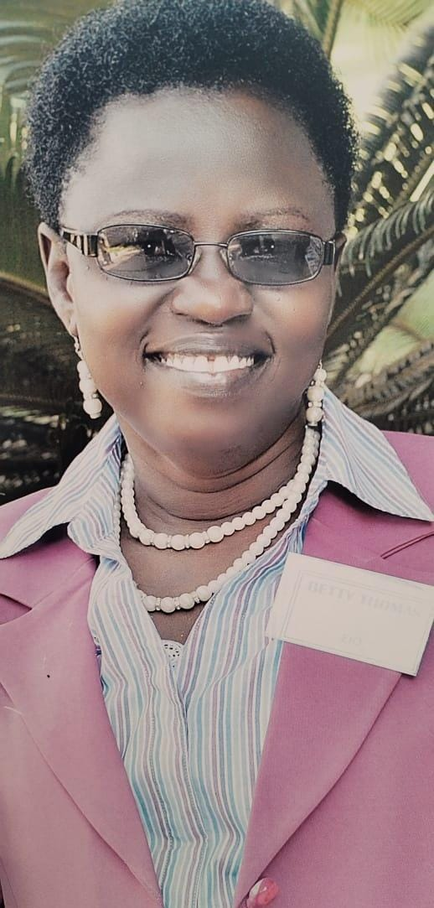

"We can do no great things, only small things with great love."
A man was walking along a beach after a storm when he saw a young girl throwing stranded starfish back into the sea. He told her, "There are thousands of them. You can't possibly make a difference." She smiled, picked up another starfish, threw it into the water and replied, "I made a difference to that one."
Every child who walks through our gates arrives with a different story. Some begin in loss, others in fear, but none of them walk alone for long. Here, every life becomes part of a larger story; one of hope, healing, and family. Now let's dive into the stories of some of the children and staff who make Juba Rescue Centre a home.






Mama Betty is the compassionate founder of Juba Rescue Centre and a lifelong humanitarian whose unwavering dedication to protecting vulnerable children transformed simple acts of kindness into a home that has changed hundreds of lives. Her belief that every child deserves love, dignity and a place to belong continues to inspire everyone at the centre.

Born Elizabeth Thomas Loro, affectionately known as Mama Betty, she has devoted more than three decades to humanitarian service in South Sudan and Uganda. Having personally experienced the hardships of war and displacement, she developed a deep compassion for children, women and families facing abandonment, abuse and poverty.
What began as simple acts of kindness; sharing food, clothing and blankets with children living on the streets of Juba, gradually grew into a lifelong mission. Her determination to restore hope and protect human dignity led to the founding of Juba Rescue Centre, where countless vulnerable children have found safety, care and the opportunity to build brighter futures.
Beyond the Rescue Centre, Mama Betty continues to serve her community as a respected leader. She is the Chairperson of the Central Equatoria Chapter of the South Sudan Women Union, a dedicated Women League leader, and a faithful Catholic leader at both parish and diocesan levels. Through her leadership, compassion and unwavering faith, she continues to inspire those around her to serve others with love and dignity.
Founded in 2012 by Mama Betty together with other like-minded people, Juba Rescue Centre; which was previously, widely known as St Clare's Children Orphanage began with visits to street children and families before growing into a refuge for abandoned, orphaned and vulnerable children throughout South Sudan.
What started with simple acts of kindness has grown into a family that provides healthcare, education, shelter, emotional support and hope for hundreds of children every year.Today the centre continues to rescue children referred by police stations, hospitals and members of the community, giving each child the opportunity to grow in a loving environment.
With support from generous friends and donors, the work expanded from offering meals and medical assistance to creating a permanent home where children could grow in safety and dignity.
Every infant who arrives receives immediate medical attention, nutritious food and a dedicated caregiver who supports them through their earliest years.
The Rescue Centre has also become a place of healing for young girls escaping abuse, neglect and forced marriages, offering protection, education and emotional support.Beyond meeting immediate needs, the centre equips children with education, life skills and confidence so they can become independent adults who positively impact their communities.
More than a rescue centre, it has become a family built on love, resilience and the belief that every child deserves a future filled with hope.Every life changed here begins with one act of compassion and continues because people around the world choose to care.
Every child who finds a home at Juba Rescue Centre begins a new chapter. Help us write the next one.
Become A Part Of Their Story